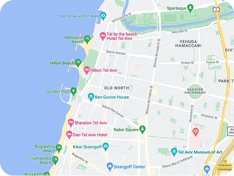
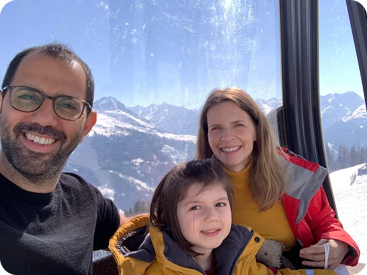
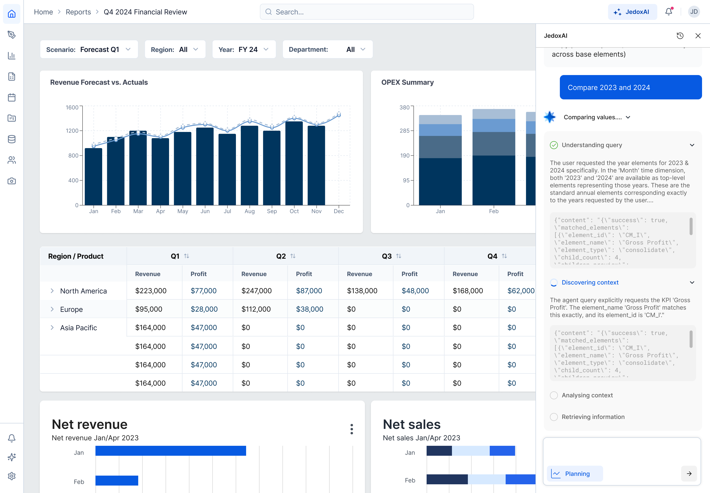
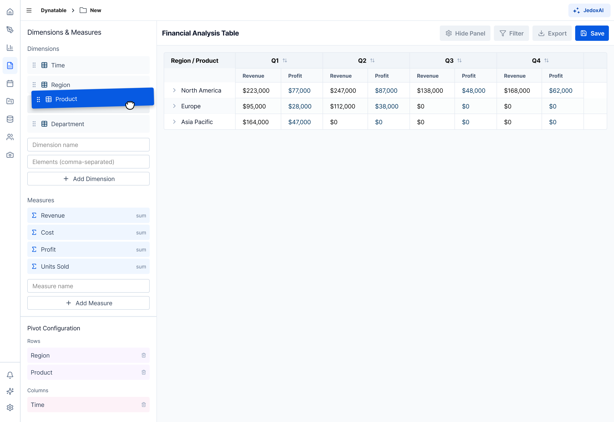
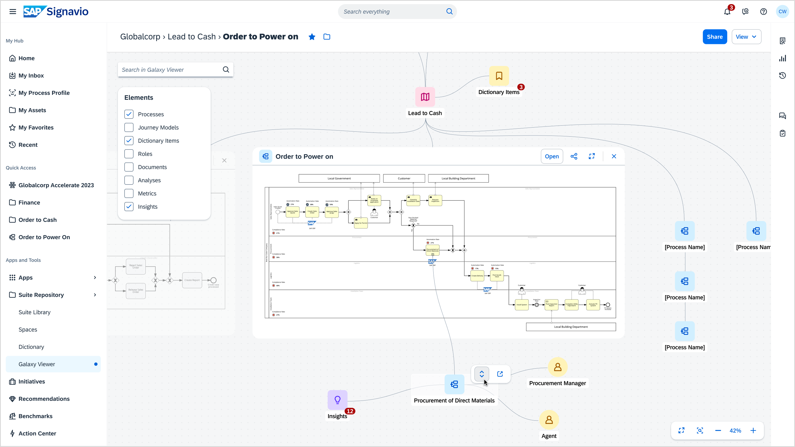
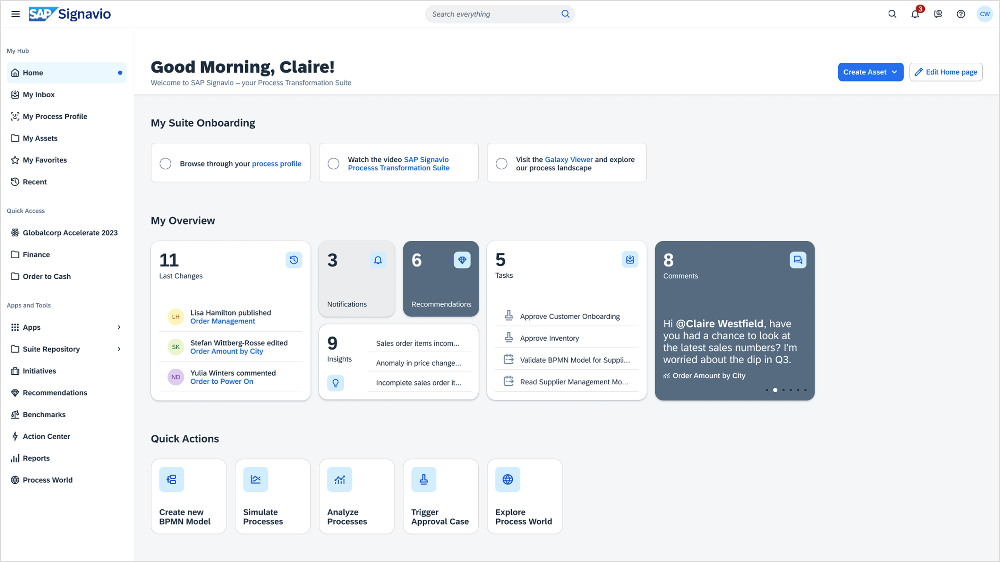
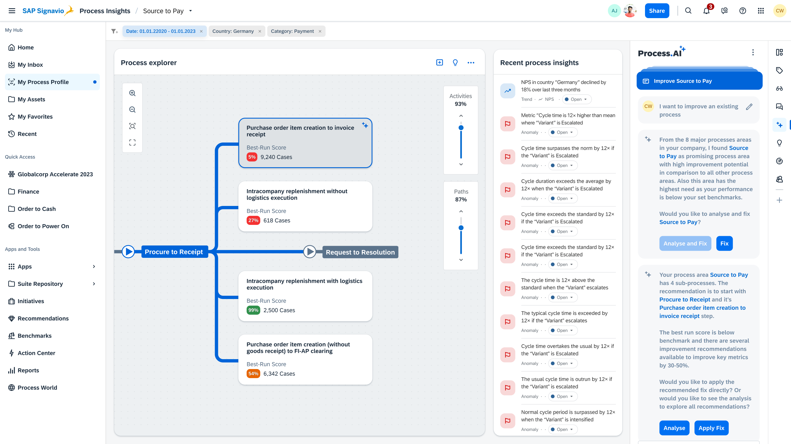
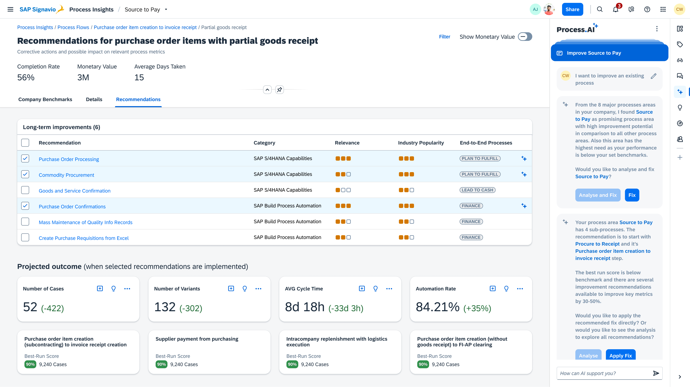
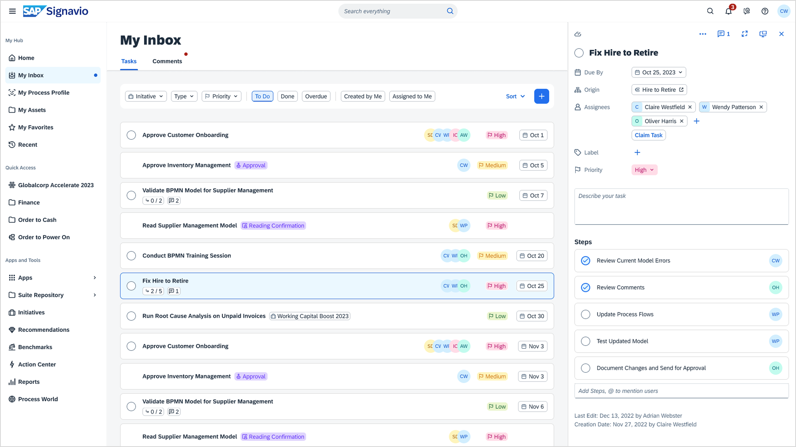

Hi! I'm Ori Cohen.
I'm a design leader with nearly 15 years of experience shaping UX/UI across startups, scale-ups, and global enterprises. Currently, I lead design at Jedox.com. Previously, I led design at Volkswagen, SAP, and other key players in the Tel Aviv and Berlin tech ecosystems. Also a ☕ bitter coffee lover and an ⛰️ average indoor climber.


Over the past nearly 15 years I've shaped UX/UI across startups, scale-ups and global enterprises, working between Tel Aviv and Berlin. My path took me from hands-on design roles to leading and scaling design teams, and to working closely with product, engineering and executive leadership in complex, evolving environments.
Today I lead design at Jedox, where I helped build and grow the design organization from the ground up. My focus has been on establishing and scaling core capabilities — research, design systems and cross-functional collaboration — and embedding UX-driven, agile processes across multiple product teams. This work has supported large-scale platform initiatives, AI-driven product development, and the rollout of new strategic features such as dashboards and enterprise tools.
A central part of my role is people leadership. I invest heavily in growing autonomy and ownership within teams, mentoring designers into strong domain leads who can independently drive research, define user flows, and partner with product and engineering. I believe that sustainable scale comes from developing leaders, not from centralizing control.
My leadership style is hands-on, direct and grounded. I aim to be clear about direction and expectations, while staying close enough to the work to support quality and decision-making. Colleagues and team members often describe me as determined, supportive, and someone who knows where we are heading while creating space for others to excel.
Before Jedox I supported design at companies such as Volkswagen and SAP, gaining experience in highly structured enterprise environments as well as in fast-moving product organizations. Working across different cultures and company stages shaped how I think about scale, collaboration and long-term product strategy.
What I'm interested in is leadership where design works as a strategic partner — shaping product direction, scaling teams and organizations, and working closely with senior leadership to drive meaningful business and user impact.
Outside of work I enjoy bitter coffee, indoor climbing (with varying success), and spending time with my family.
-
I lead the UX/UI team at Jedox, a financial planning platform. Day to day that means the UX research and central design system streams, design embedded across cross-functional teams, and strategic UX initiatives, working closely with leadership, engineering, product and our solution experts. Most of all it means people: helping everyone on the team grow, and growing the team itself.
- Leading the research, redesign and launch of a modern FP&A platform for multiple personas, agentic AI included.
- Leading the building of our design system, so products look and work the same everywhere.
- A research practice that listens to users through conversations and data.

Financial reviewForecast against actuals, with JedoxAI working alongside. Workspace homeQuick starts, recent models and shared work. ReportsFolders and reports, in a list or a grid. CanvasBuilding a dashboard: widgets dragged in from the side, laid out on the canvas. 
DynatableDimensions, measures and pivot configuration. IntegratorA transform flowgraph, with JedoxAI alongside it. -
At SAP Signavio I led design discovery and delivery across the process transformation suite. A big part of the job was people: helping a large organization pull in the same direction.
- Helping bring three new products, dashboards, metrics libraries and AI insights, all the way to general availability.
- Bringing eight teams together, so design stayed consistent across product lines as it grew, while we kept improving the way we worked.
- Workshops, design-thinking sessions and design sprints with people from across the business, to find out what was worth building.

Galaxy ViewerThe process landscape as a graph, with a model previewed in place. 
HubOnboarding, recent changes, tasks and comments in one place. 
Process explorerSub-processes scored against best run, insights beside them. 
Process InsightsRecommendations scored against benchmarks, with Process.AI alongside. 
My InboxTasks, assignees and steps. -
A drawer rather than a case study. Interaction and motion studies, interface fragments I keep coming back to, and product work from further back that never got written up.
A few of them, while the writing catches up.